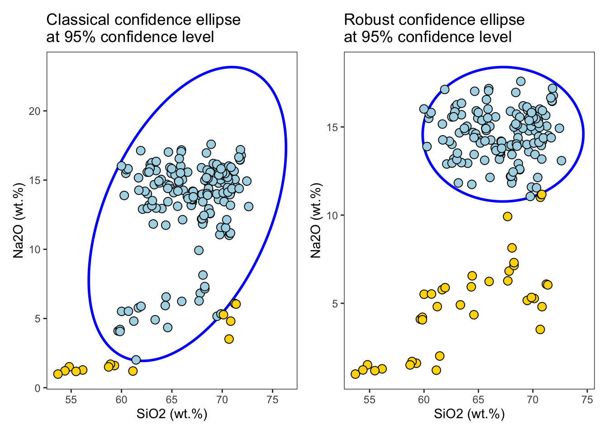
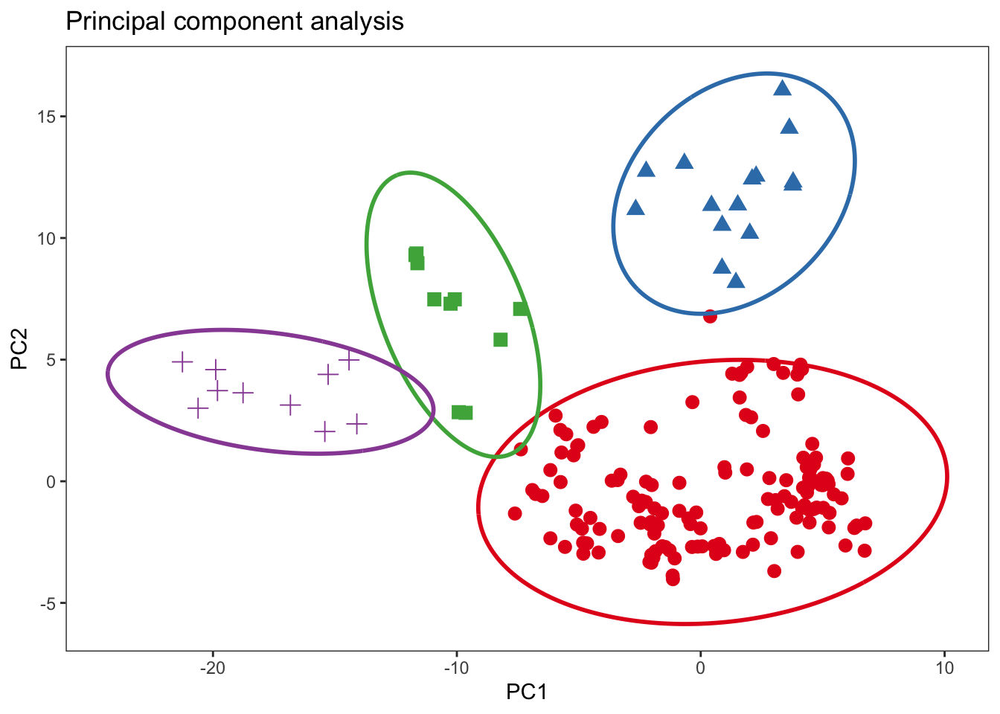

The ConfidenceEllipse package computes the coordinate points of confidence ellipses and ellipsoids for a given bivariate and trivariate dataset. The size of the ellipse and ellipsoid is determined by the confidence level, and the shape is determined by the covariance matrix. The confidence level is usually chosen to be 95% or 99%, and the resulting confidence region contains the points that are expected to lie within the multivariate distribution.
Installation
You can install the development version of ConfidenceEllipse like so:
# install.packages("remotes")
# remotes::install_github("ChristianGoueguel/ConfidenceEllipse")Example
library(magrittr)
library(tidyselect)
library(patchwork)
library(dplyr)
library(ggplot2)
library(purrr)
library(tidyr)Dataset
The dataset is comprised of 13 different measurements for 180 archaeological glass vessels from different groups (Janssen, K.H.A., De Raedt, I., Schalm, O., Veeckman, J.: Microchim. Acta 15 (suppl.) (1998) 253-267. Compositions of 15th - 17th century archaeological glass vessels excavated in Antwerp.)
data("glass", package = "ConfidenceEllipse")
glass %>% glimpse()
#> Rows: 180
#> Columns: 14
#> $ glassType <fct> 1, 1, 1, 1, 1, 1, 1, 1, 1, 1, 1, 1, 1, 1, 1, 1, 1, 1, 2, 2, …
#> $ Na2O <dbl> 13.904, 14.194, 14.668, 14.800, 14.078, 13.600, 12.942, 15.6…
#> $ MgO <dbl> 2.244, 2.184, 3.034, 2.455, 2.480, 1.648, 2.690, 2.028, 2.25…
#> $ Al2O3 <dbl> 1.312, 1.310, 1.362, 1.385, 1.072, 2.012, 1.420, 1.242, 1.07…
#> $ SiO2 <dbl> 67.752, 67.076, 63.254, 63.790, 68.768, 69.628, 64.012, 70.6…
#> $ P2O5 <dbl> 0.884, 0.938, 0.988, 1.200, 0.682, 0.698, 0.966, 0.210, 0.75…
#> $ SO3 <dbl> 0.052, 0.024, 0.064, 0.115, 0.070, 0.038, 0.046, 0.310, 0.03…
#> $ Cl2O <dbl> 0.936, 0.966, 0.886, 0.988, 0.966, 0.908, 0.896, 0.676, 0.93…
#> $ K2O <dbl> 3.044, 3.396, 2.828, 2.878, 2.402, 3.196, 2.526, 2.326, 2.32…
#> $ CaO <dbl> 8.784, 8.636, 11.088, 10.833, 8.808, 6.160, 12.982, 6.324, 9…
#> $ MnO <dbl> 0.674, 0.698, 1.240, 0.978, 0.310, 1.170, 0.874, 0.214, 0.60…
#> $ Fe2O3 <dbl> 0.364, 0.336, 0.400, 0.433, 0.242, 0.650, 0.516, 0.278, 0.25…
#> $ BaO <dbl> 0.040, 0.040, 0.046, 0.025, 0.022, 0.156, 0.014, 0.032, 0.02…
#> $ PbO <dbl> 0.004, 0.198, 0.134, 0.120, 0.102, 0.136, 0.120, 0.062, 0.02…Confidence Region
Classical and robust confidence ellipse
First, the confidence_ellipse function is used to compute coordinate points of the confidence ellipse and then the ellipse is plotted on a two-dimensional plot x and y of the data. Points that lie outside the ellipse are considered to be outliers, while points that lie within the ellipse are considered to be part of the underlying distribution with the specified confidence level conf_level.
ellipse_95 <- confidence_ellipse(glass, x = SiO2, y = Na2O, conf_level = 0.95)
rob_ellipse_95 <- confidence_ellipse(glass, x = SiO2, y = Na2O, conf_level = 0.95, robust = TRUE)
ellipse_95 %>% glimpse()
#> Rows: 361
#> Columns: 2
#> $ x <dbl> 74.45896, 74.35724, 74.25314, 74.14669, 74.03792, 73.92686, 73.81356…
#> $ y <dbl> 21.99964, 22.08244, 22.16235, 22.23932, 22.31335, 22.38440, 22.45245…
cutoff <- qchisq(0.95, df = 2)
MDsquared <- glass %>%
select(SiO2, Na2O) %>%
as.matrix() %>%
mahalanobis(colMeans(.), cov(.), inverted = FALSE)
plot1 <-
ggplot() +
geom_path(data = ellipse_95, aes(x = x, y = y), color = "blue", linewidth = 1L) +
geom_point(
data = glass %>%
mutate(md = MDsquared) %>%
filter(md <= cutoff),
aes(x = SiO2, y = Na2O),
shape = 21L, color = "black", fill = "lightblue", size = 3L) +
geom_point(
data = glass %>%
mutate(md = MDsquared) %>%
filter(md > cutoff),
aes(x = SiO2, y = Na2O),
shape = 21L, color = "black", fill = "gold", size = 3L) +
labs(
x = "SiO2 (wt.%)",
y = "Na2O (wt.%)",
title = "Classical confidence ellipse\nat 95% confidence level") +
theme_bw() +
theme(legend.position = "none")
x_mcd <- glass %>%
select(SiO2, Na2O) %>%
as.matrix() %>%
robustbase::covMcd()
rob_MDsquared <- glass %>%
select(SiO2, Na2O) %>%
as.matrix() %>%
mahalanobis(x_mcd$center, x_mcd$cov)
plot2 <-
ggplot() +
geom_path(data = rob_ellipse_95, aes(x = x, y = y), color = "blue", linewidth = 1L) +
geom_point(
data = glass %>%
mutate(md = rob_MDsquared) %>%
filter(md <= cutoff),
aes(x = SiO2, y = Na2O),
shape = 21L, color = "black", fill = "lightblue", size = 3L) +
geom_point(
data = glass %>%
mutate(md = rob_MDsquared) %>%
filter(md > cutoff),
aes(x = SiO2, y = Na2O),
shape = 21L, color = "black", fill = "gold", size = 3L) +
labs(
x = "SiO2 (wt.%)",
y = "Na2O (wt.%)",
title = "Robust confidence ellipse\nat 95% confidence level") +
theme_bw() +
theme(legend.position = "none")
plot1 | plot2
Grouping
For grouping bivariate data, the .group_by argument can be used if the data contains an unique grouping variable (.group_by = NULL by default). When a grouping variable is provided, the function will compute the ellipses separately for each level of the factor, allowing you to explore potential differences or patterns within subgroups of the data.
It’s important to note that the grouping variable should be appropriately coded as a factor before passing it to the .group_by argument. If the variable is currently stored as a character or numeric type, you may need to convert it to a factor using functions like as.factor() or forcats::as_factor().
rpca_scores <- glass %>%
select(where(is.numeric) )%>%
pcaPP::PCAproj(method = "qn") %>%
pluck("scores") %>%
as_tibble() %>%
mutate(glassType = glass %>% pull(glassType)) %>%
rename(PC1 = Comp.1, PC2 = Comp.2)
ellipse_pca <- rpca_scores %>% confidence_ellipse(x = PC1, y = PC2, .group_by = glassType)
ggplot() +
geom_point(data = rpca_scores, aes(x = PC1, y = PC2, color = glassType, shape = glassType), size = 3L) +
geom_path(data = ellipse_pca, aes(x = x, y = y, color = glassType), linewidth = 1L) +
scale_color_brewer(palette = "Set1", direction = 1) +
labs(x = "PC1", y = "PC2", title = "Principal component analysis") +
theme_bw() +
theme(legend.position = "none")
Ellipsoid
The confidence_ellipsoid function accepts an additional variable z and computes the ellipsoid for trivariate data.
ellipsoid_grp <- glass %>% confidence_ellipsoid(SiO2, Na2O, Fe2O3, glassType)
ellipsoid_grp %>% glimpse()
#> Rows: 10,000
#> Columns: 4
#> $ x <dbl> 67.32486, 67.32486, 67.32486, 67.32486, 67.32486, 67.32486, …
#> $ y <dbl> 14.51964, 14.51964, 14.51964, 14.51964, 14.51964, 14.51964, …
#> $ z <dbl> 0.5971494, 0.5971494, 0.5971494, 0.5971494, 0.5971494, 0.597…
#> $ glassType <fct> 1, 1, 1, 1, 1, 1, 1, 1, 1, 1, 1, 1, 1, 1, 1, 1, 1, 1, 1, 1, …
rgl::setupKnitr(autoprint = TRUE)
rgl::plot3d(
x = ellipsoid_grp$x,
y = ellipsoid_grp$y,
z = ellipsoid_grp$z,
xlab = "SiO2 (wt.%)",
ylab = "Na2O (wt.%)",
zlab = "Fe2O3 (wt.%)",
type = "s",
radius = 0.03,
col = as.numeric(ellipsoid_grp$glassType)
)
rgl::points3d(
x = glass$SiO2,
y = glass$Na2O,
z = glass$Fe2O3,
col = as.numeric(glass$glassType),
size = 5
)
rgl::view3d(theta = 260, phi = 30, fov = 60, zoom = .85)